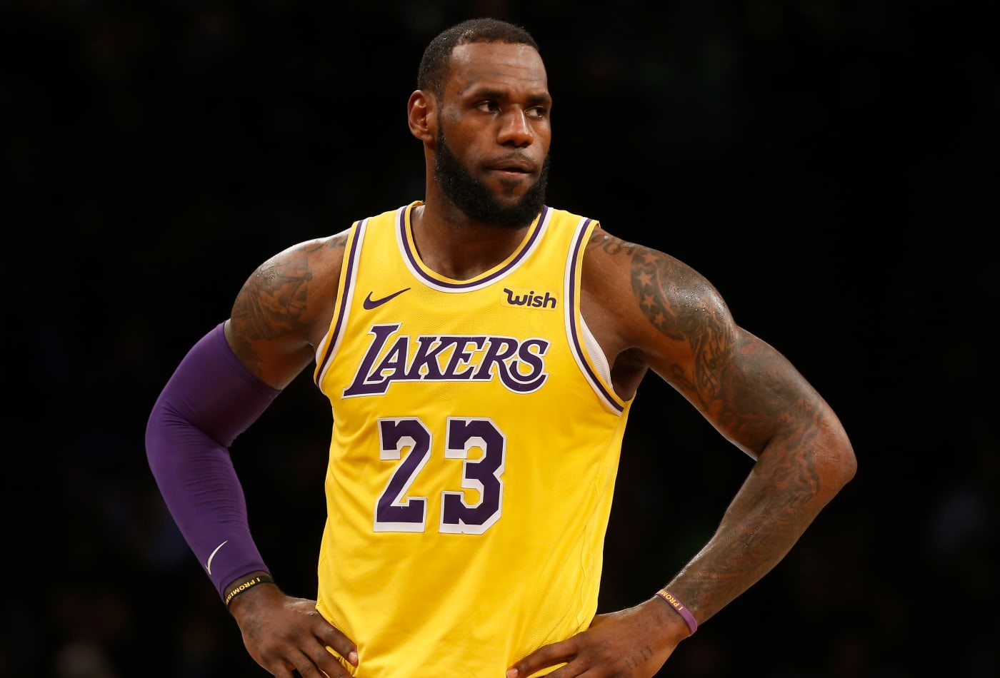
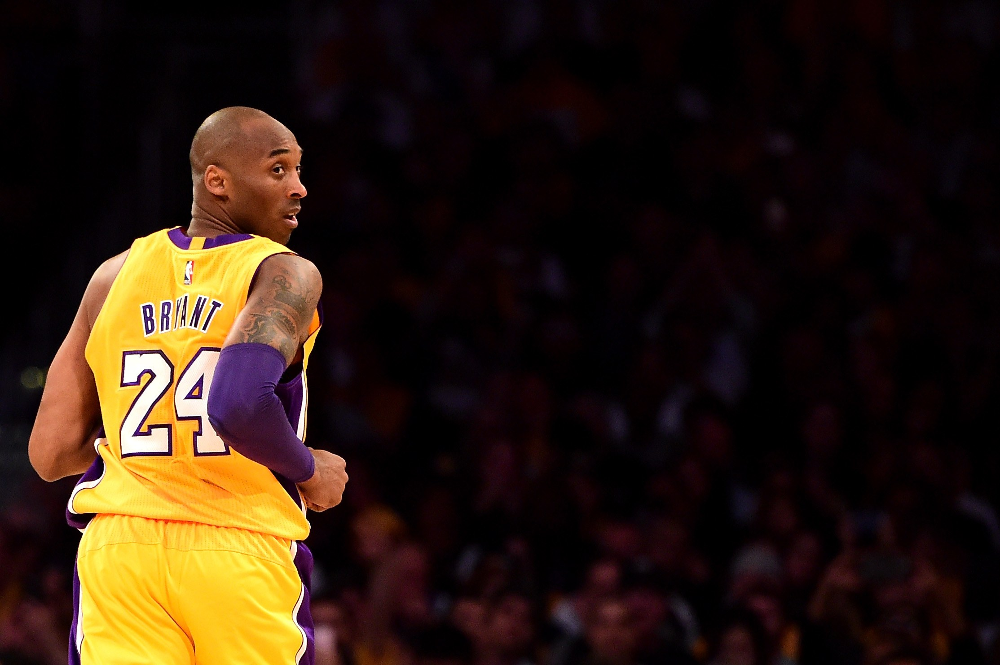
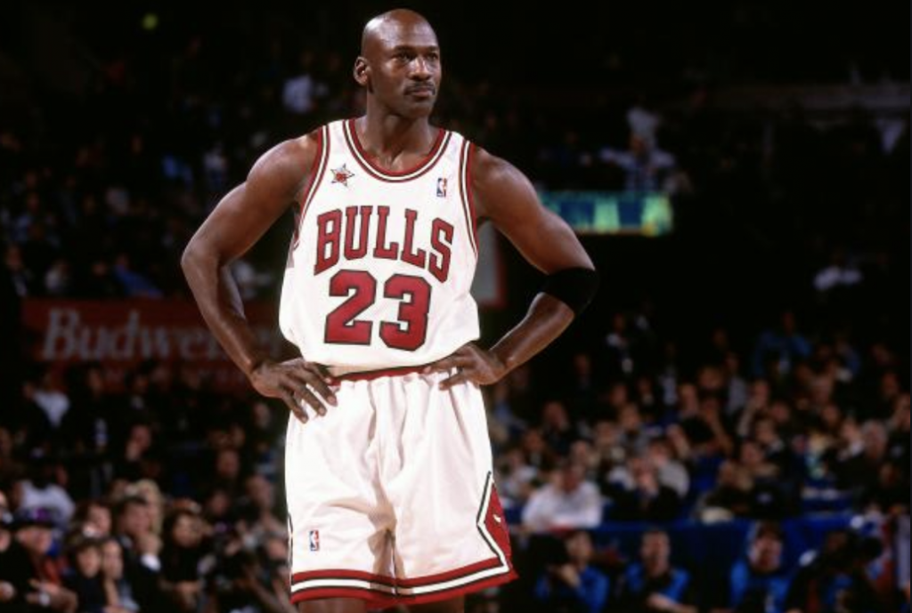
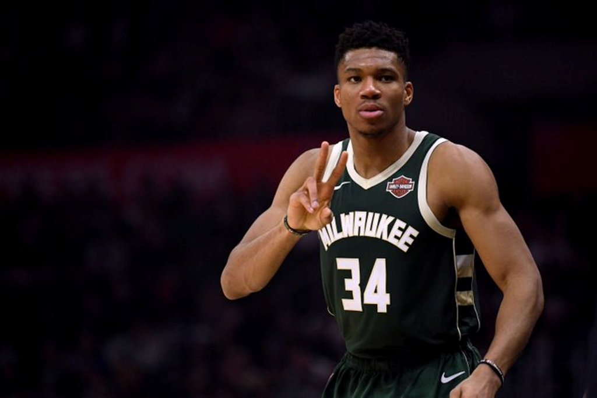

1. Lebron James(King James) More Stories In his freshman year LeBron had averaged 21 points and 6 rebounds per game. But he soon averaged 29 points, 8.3 rebounds, 5.7 assists, 3.3 steals per game. This was a dramatic growth in such a short period of time. He was improving his overall game quickly and becoming a very valuable player to his team. four-time NBA MVP. Tim Duncan, of the San Antonio Spurs, won back-to-back Most Valuable Player awards in the '01-02 and '02-03 seasons.  2. Kobe bryant(Black Mamba) More Stories Kobe Bryant was ranked 14th in a list of the 50 greatest NBA players of all time. The list, published by Bleacher Report, ranked the five-time NBA champion behind Shaquille O'Neal (sixth), Tim Duncan (seventh), and Magic Johnson (fourth). Bryant is one of the NBA's most decorated players five NBA championships, 18-time All-Star, 15-time member of the All-NBA Team, 12-time member of the All-Defensive Team, 2008 NBA Most Valuable Player (MVP), two-time NBA Finals MVP winner.  3. Michael Jordan(MJ) More Stories "I've missed more than 9000 shots in my career. I've lost almost 300 games. 26 times, I've been trusted to take the game winning shot and missed. I've failed over and over and over again in my life. Jordan's individual accolades and accomplishments include six NBA Finals Most Valuable Player (MVP) Awards, ten scoring titles (both all-time records), five MVP Awards, ten All-NBA First Team designations, nine All-Defensive First Team honors, fourteen NBA All-Star Game selections, three All-Star Game MVP Awards  4. Giannis Antetokounmpo(The Greek Freak) More Stories The young man who not so long ago sold watches and sunglasses on the sidewalks of Greece to help support his Nigerian immigrant family just signed a $100 million deal. Hardly more than three years back, Giannis Antetokounmpo was a hoop dreamer half a world away from the glittering arenas of the NBA and unknown to most of its fans. Now he's a budding star, one of the league's most beloved players and newly minted with a four-year, $100 million contract extension at just 21 years old. Milwaukee Bucks superstar Giannis Antetokounmpo was named the NBA's MVP on Monday, edging out Houston Rockets guard James Harden and Oklahoma City Thunder wing Paul George in a tight race. Antetokounmpo received 78 first-place votes, while James Harden collected 23. No other player received a vote for first place. 